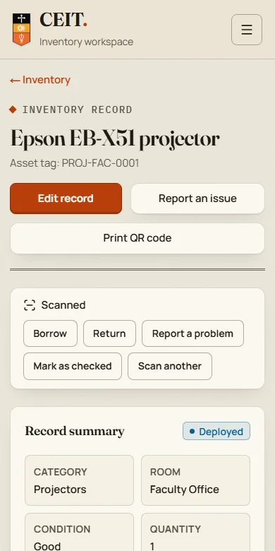
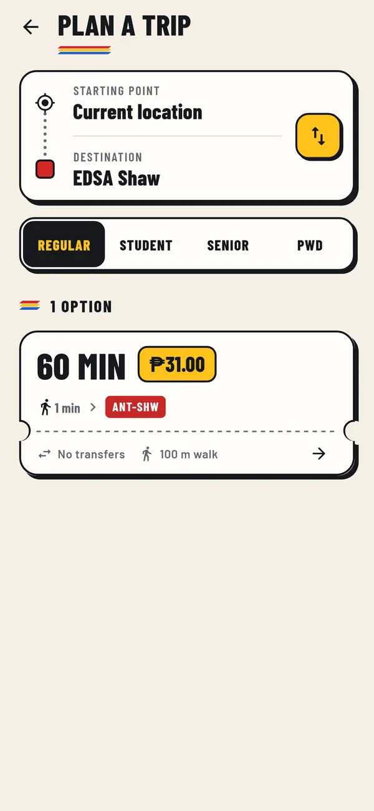
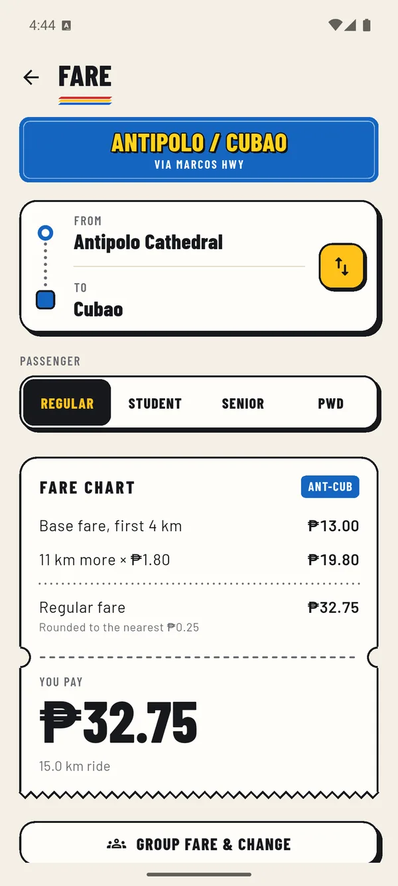
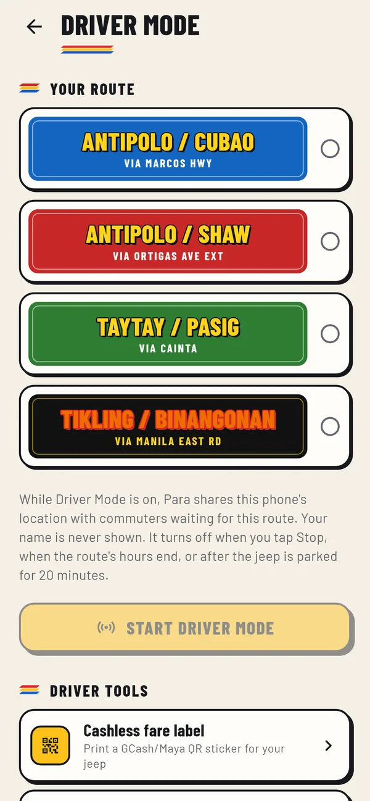
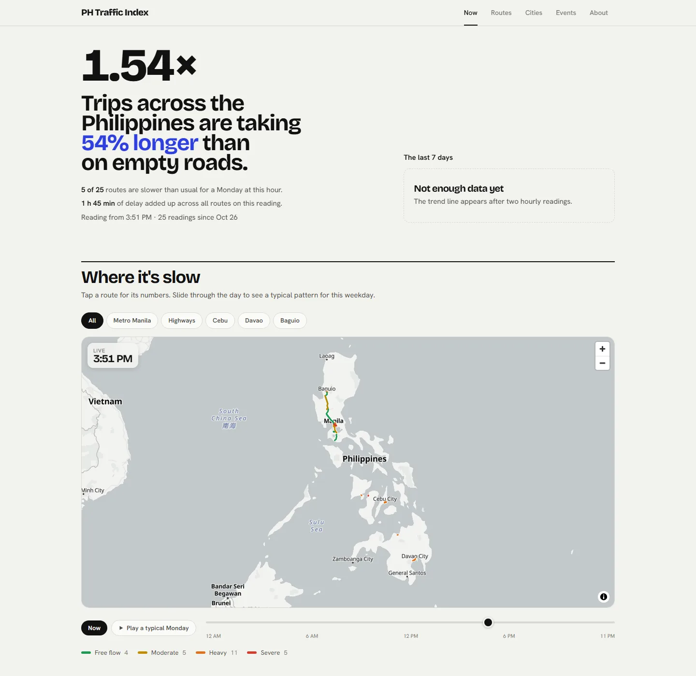

Rafaelle Francisco
I'm a full-stack developer in the Philippines. Lately: an inventory system for our college, a jeepney app for commuters, an hourly traffic dataset for 25 routes across the country, and a usage tracker for AI coding agents.
Drag the screenshots around
CEIT Inventory
QR-based inventory for the College of Engineering and IT's labs. Every unit gets an asset tag like PC-LAB1-0001 and a printed label. Staff scan it to edit the record; students scan it to borrow, return or report a problem.
- QR labels, single or a whole A4 sheet
- Borrowing, reservations, overdue reminders
- Maintenance tickets and an audit trail
- CSV / Excel import with a dry-run check
- Reports on the page or as PDF and CSV
Next.js 16 · React 19 · Prisma · PostgreSQL · Supabase · Playwright

Para
Jeepneys carry millions of people a day, but there's no timetable, no fixed stops and no official map. You learn the routes by asking. Para puts them on a map, plans the trip, and tells you the fare before you ride.



-
Every route, drawn as its signboard
Tap a route for its stops, hours and fare; tap a terminal for every route that passes it. Routes, stops and fares are cached, so it keeps working without signal.
-
A trip planner for transport with no timetable
Routes are cut into points every 150 m and searched on the phone for trips with one, two or three rides. No server ever learns where you're going.
-
The fare, before you ride
Worked out from the official fare matrices for regular, student, senior and PWD riders, with a check for when you've been overcharged.
-
Live jeeps from the drivers themselves
Driver Mode shares a jeep's position in the background, about every 10 seconds and only when it has moved, so commuters see what's coming.
Flutter · Dart · Supabase · PostGIS · MapLibre · Next.js admin panel · ~1,000 automated tests
PH Traffic Index

Waze and Google show traffic right now. What they don't publish is a history you can compare. Every hour a GitHub Actions job asks TomTom how long 25 fixed routes take with live traffic and saves the answer, building a dataset of the same trips measured the same way, week after week.
- 19 city routes in seven cities, 6 highways out of Manila
- Rankings, rush-hour curves and event comparisons
- A request counter that keeps it on TomTom's free tier
- No server of its own: GitHub, Supabase and Vercel
Next.js · TypeScript · Supabase · GitHub Actions · TomTom Routing API · MapLibre
Trackage
Usage, cost and context analytics for AI coding agents like Claude Code, Codex and Gemini CLI, across every computer you use. A small open-source collector reads the logs the agents already keep and syncs numbers only. Prompts, code and file paths never leave your machine.
- Live view of every running agent
- Cost per session, project and model
- Alerts in the app, email, Slack or Discord
- Free, Pro and Team plans
Node.js · Express · React · WebSocket · Fly.io
About
I'm Rafaelle. I like software that disappears into someone's day: the scanner that just works, the fare you know before you board, the report that comes out already formatted.
I care about the parts nobody demos, like empty states, error messages, offline mode and what the database lets each role touch. Most of what I build is TypeScript or Dart, from the schema to the last hover state.
Front end
- React & Next.js
- Flutter
- TypeScript, Dart
- Accessible, responsive UI
Back end
- PostgreSQL, PostGIS
- Supabase, Prisma
- Node.js & Express
- Row level security, auth
Shipping
- Git & GitHub
- Vercel, Fly.io
- Playwright, pgTAP
- Migrations on live data
Let's talk
Building something, hiring, or just want to compare notes? My inbox is open.